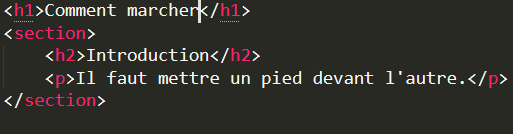
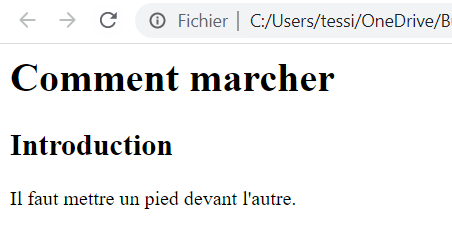

<section>
| Description | Exemple | Résultat de l'exemple |
|---|---|---|
|
La balise <section> représente une section dans un document (chapitres, arguments, introductions, conclusions,..). Une section commence généralement avec un titre. Il peut-être utilisé dans la balise <article> aussi. |
 |  |